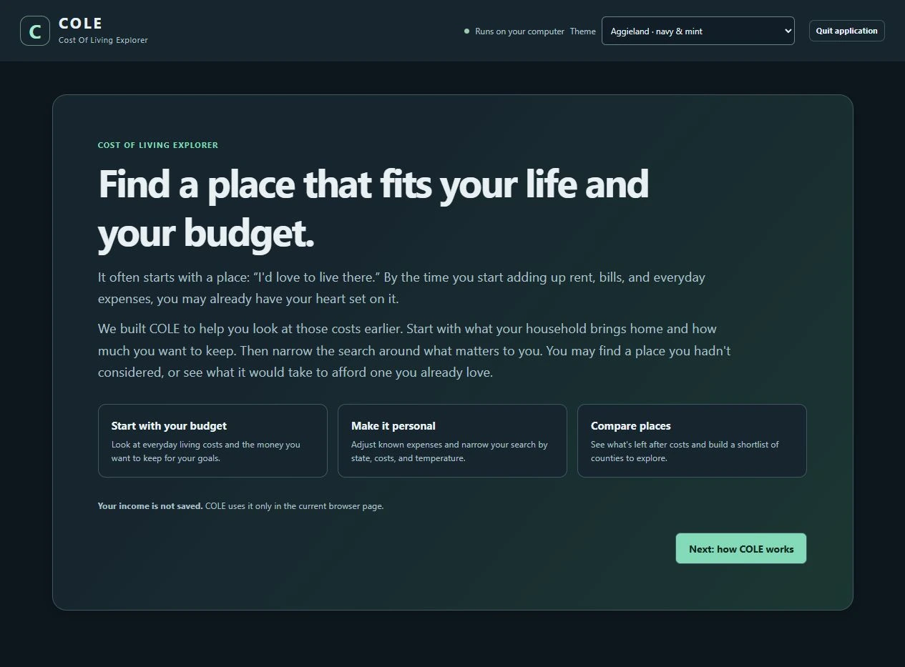
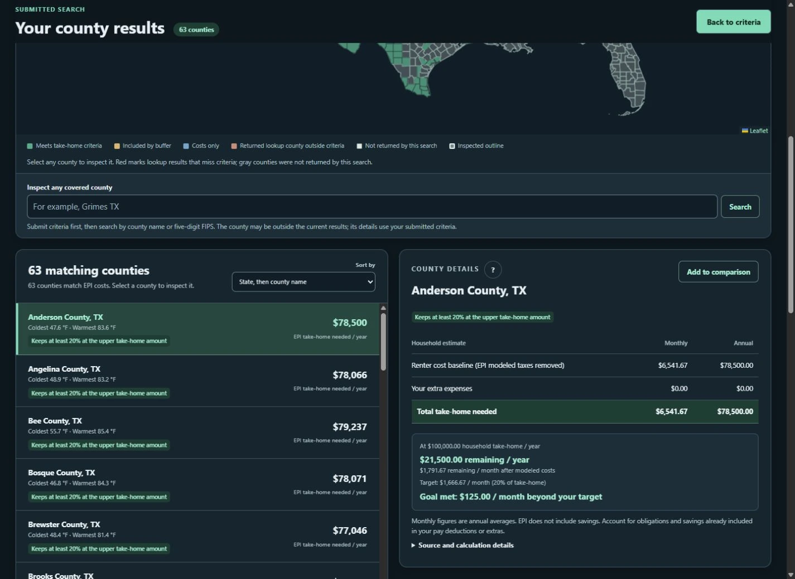
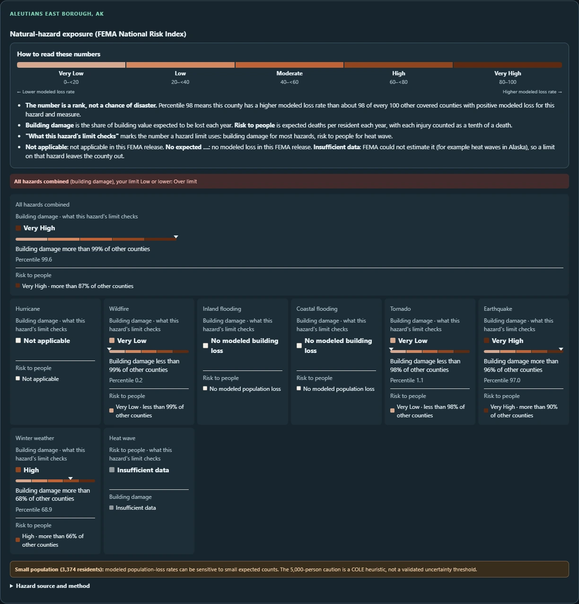

Define the household
InputHousehold + income
ProcessCost assumptions
OutputPersonal scenario
Choose a supported profile, take-home income, and additional expenses.
I lead COLE’s design and feature integration, shaping a household-driven county search that brings cost, climate, and hazard context into one map with assumptions users can inspect.
Read the case study ↓


County cost estimates depend on the household being modeled, its take-home income, and its priorities. COLE combines those choices with public data so users can compare counties and inspect which assumptions put a result above or below their chosen criteria. It is a comparison aid, not a personalized cost forecast or relocation recommendation.
I lead application design, requirements, integration, documentation, and presentation. I also lead collaborators in developing and integrating feature add-ons that expand COLE’s usefulness, including natural-hazard context. My work connects those contributions into a consistent search, map, and comparison workflow.
The application combines household budgets from the Economic Policy Institute’s (EPI) Family Budget Calculator, county and place geography from the U.S. Census Bureau, temperature estimates from the National Oceanic and Atmospheric Administration (NOAA), and optional hazard data from the Federal Emergency Management Agency’s (FEMA) National Risk Index. The cost table contains ten standardized household budgets for each of 3,143 counties and county equivalents—31,430 modeled estimates in all. These are budgets calculated from a standard model, not records of what actual households spent. EPI’s 2026 edition reports costs in 2025 dollars.
Users choose a household profile, enter take-home income, and add expenses missing from the published budget. Because income is entered after tax, COLE removes EPI’s modeled tax amount from the published budget before comparison. A user-entered replacement cost is applied equally across searched counties; it does not adjust for local price differences. The original estimate remains visible beside it.
Optional filters narrow results by state, cost category, long-term temperature, hazard context, and the share of income to reserve. The temperature values are long-term county-area averages for 1991–2020, not city forecasts or daily weather. A live draft count previews the filters; submitting applies them to the map, results, details, and comparisons.
The optional hazard feature ranks modeled annual loss estimates—the model’s expected loss averaged over a year—among counties with available data. A rank compares counties for a particular hazard; it is not the probability that a disaster will occur or an official FEMA risk rating. Coverage and available measures vary by hazard, and missing values stay visible. Place and Census ZIP Code Tabulation Area (ZCTA) searches resolve to county-level estimates, including for areas that cross county boundaries. Users inspect a result before adding it to a comparison of up to three counties.
COLE runs locally with prepared data. Flask runs the Python application, Waitress serves it on the computer, and JavaScript with Leaflet builds the browser interface and map. The current source is v0.6.0; portable Windows packages are earlier snapshots. Edited filters remain a draft until the user submits a new search. Household budgets are standardized estimates, and hazard ranks provide comparative context rather than predictions.
Explore each stage of the work.
Choose a supported profile, take-home income, and additional expenses.
Preview the effect of cost, climate, reserve, and optional hazard criteria before applying them.
Search by county, place, or ZIP Code Tabulation Area; the underlying cost estimate is still for the associated county. Compare up to three counties.
Open costs, original estimates, climate context, and hazard definitions before choosing a location.